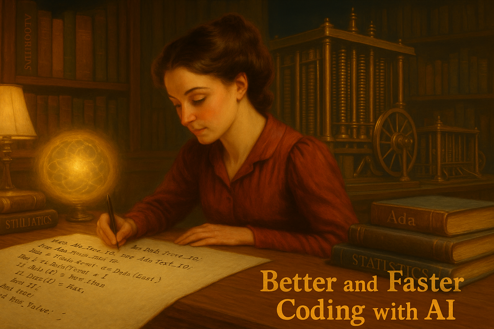

Week 00: AI-Assisted Coding Prep
Boosting coding for data analysis with AI tools
Week 00: AI-Assisted Coding Prep
Boosting coding for data analysis with AI tools

Learning Objectives
By the end of this session, students will:
- Understand how AI transforms coding workflows for data analysis tasks
- Learn effective prompting strategies for data analysis code generation
- Experience key AI coding tools: ChatGPT Canvas, Claude Projects, GitHub Copilot
- Practice AI-assisted coding for common data analysis tasks
- Set up integrated development environments with AI assistance
- Focus on R and Python. But mostly applicable to Stata. AI also great for SQL.
Preparation / Before Class
🔧 Tool Setup
Required Access: - ChatGPT account (free tier sufficient for testing) - Claude account (free tier sufficient)
Recommended Setup: - GitHub account for Copilot (free for students) - VSCode, RStudio, or Jupyter Notebook installed - Your preferred data analysis language ready (R/Python)
Optional but Valuable: - Cursor AI editor (free trial available)
Class Material
🤖 Why AI + Data Analysis Coding Works (20 min)
Covers key set of tasks:
- Repetitive patterns: Data analysis has common workflows (load → clean → analyze → visualize)
- Well-documented libraries: pandas, scikit-learn, as well as dplyr, ggplot2, are extensively covered in AI training data (had been in use for a while). With updates, it knows more recent libraries from tensorflow to fixest (R)
- Clear intentions: “Create a scatterplot with regression line” is specific enough for good code generation. Well established “good practice”
- Iterative nature: Data analysis involves lots of tweaking and refinement – chat aspect helpful.
What AI Excels At:
- Boilerplate code and setup
- Syntax reminders and library imports
- Standard statistical procedures
- Data manipulation and cleaning
- Basic visualization code
Human Oversight and Decisions are Needed:
- Research design decisions
- Statistical / econometric interpretation
- Domain-specific logic
- Finalize question (vs bland suggestions)
- Quality control and validation
📝 Effective Prompting for Data Analysis (25 min)
Model Recommendations:
- ChatGPT 4o / Claude Sonnet 4. works about equally fine.
Prompting Best Practices:
- Be specific about libraries: “Using pandas and seaborn…” vs. “Using R and ggplot2…”
- Include data structure: “DataFrame with columns: date, price, volume”
- Include data structure 2: Show, upload a small bit of data, like 1/1000 random sample
- Specify output format: “Save as PNG for publication” or “Return as tidy dataframe”
- Ask for comments: “Include detailed comments explaining each step”
Example prompts
Example Prompt 1: broad
"Here is some sales data, summarize regional variation.vs
Example Prompt 2: with details
"Create Python (R) code using pandas (dplyr) to:
1) Load CSV with columns id, date, sales, region
2) Filter for 2023 data
3) Group by region and calculate mean sales
4) Create a bar chart with plotnine / ggplot2"What are the pros and cons of each?
💡 Data Analysis Use Cases (15 min)
4 Common Scenarios:
1. Data Cleaning Pipeline
Prompt: "Clean this dataset: remove duplicates, handle missing values in numeric columns with median imputation, standardize date formats"
Result: Complete pandas/dplyr cleaning workflow with validation checks2. Exploratory Data Analysis
Prompt: "Create EDA for housing dataset: summary statistics, correlation matrix heatmap, distribution plots for price by neighborhood"
Result: Comprehensive analysis with publication-ready visualizations3. Statistical Modeling
Prompt: "Run OLS regression with robust standard errors: dependent variable is log_wage, controls are experience, education, gender"
Result: Complete analysis with assumption checks and interpretation-ready output4. Machine Learning Pipeline
Prompt: "Build random forest for classification: split data 80/20, hyperparameter tuning with cross-validation, feature importance plot"
Result: Full ML workflow with model evaluation and visualization🛠️ AI Coding Tools Showcase (30 min)
ChatGPT Tools:
- Canvas: Collaborative coding environment for iterative development
- Advanced Data Analysis: Upload datasets, generate analysis with code execution
- GPT-4.1: Optimized specifically for coding tasks
Claude Tools: - Projects: Upload full datasets and documentation for context-aware coding - Artifacts: Code generation with real-time preview and editing - Claude 4 Sonnet: Strong reasoning for complex analytical workflows
Specialized Coding Tools: - Cursor AI: AI-first code editor with context-aware suggestions - GitHub Copilot: Inline code completion integrated into your existing editor - Replit: Browser-based coding with AI assistance
Hands-on Demo: - Upload sample dataset to ChatGPT Advanced Data Analysis - Create Claude Project with course data - Compare code generation approaches
⚡ GitHub Copilot Integration (20 min)
Setup in Different Environments:
VSCode:
- Install GitHub Copilot extension
- Authenticate with GitHub account
- Use Ctrl+Space for suggestions, Tab to accept
Jupyter Notebook:
- Install via VS Code Jupyter extension or JupyterLab extension
- Inline suggestions while typing
- Copilot Chat for longer explanations
RStudio:
- Enable GitHub Copilot in Global Options > Code > Completion
- Works with R scripts and R Markdown
- Suggests tidyverse and base R patterns
Workflow Best Practices:
- Write descriptive comments before code blocks
- Use meaningful variable names to guide suggestions
- Accept suggestions, then modify as needed
- Use Copilot Chat for explanations and debugging
Discussion Questions
Reflection:
- Which AI tool felt most natural for your coding style?
- Where did AI suggestions surprise you (positively or negatively)?
- How might this change your typical data analysis workflow?
- What validation steps would you add when using AI-generated code?
Practice Exercises
Try these with different AI tools:
- Data Import & Clean: Load a CSV, handle missing values, create summary statistics
- Visualization: Create a publication-ready scatterplot with trend line
- Statistical Test: Run appropriate test comparing two groups
- Simple ML: Train and evaluate a basic prediction model
Compare: Which tool gave the best code for each task?
Background, Tools and Resources
Getting Started: - GitHub Student Pack - Free Copilot access - Cursor AI - AI-first code editor - OpenAI Codex Cookbook - Advanced prompting examples
Key Insight: AI coding assistance is most powerful when you understand the underlying concepts. Use AI to accelerate implementation, not replace understanding.
Next Week: Week 1 - LLM Review where we’ll explore broader AI concepts for data analysis.
Some personal comments on AI and this class
- While this class is called week00, it was created last. You may have guessed.
- AI (Claude 4.0) created a great deal of this class following a detailed prompt. I also asked whether to keep it as week00 or change all numbering. Great answers.